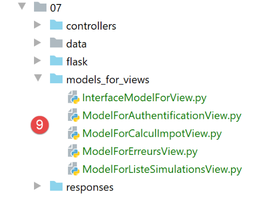
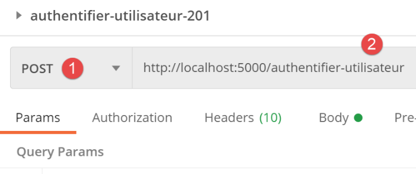
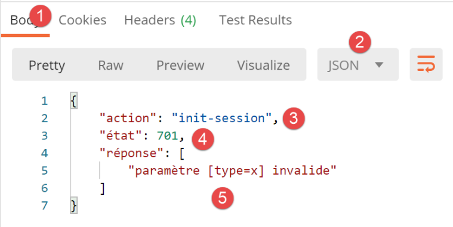
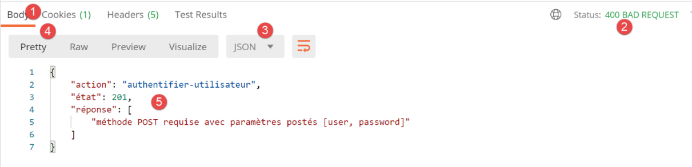
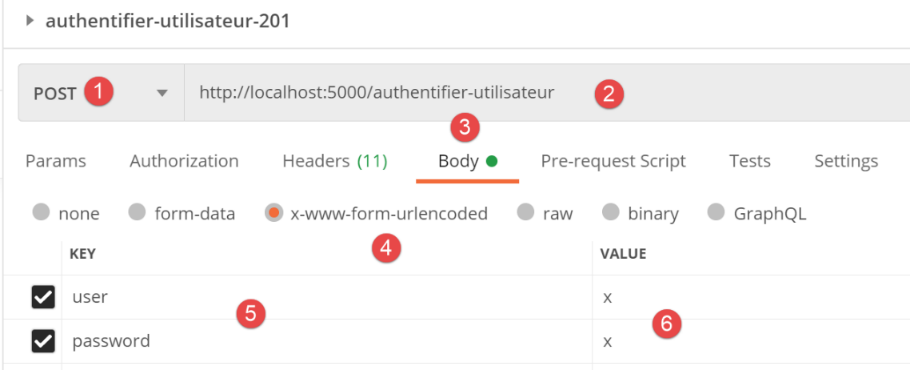
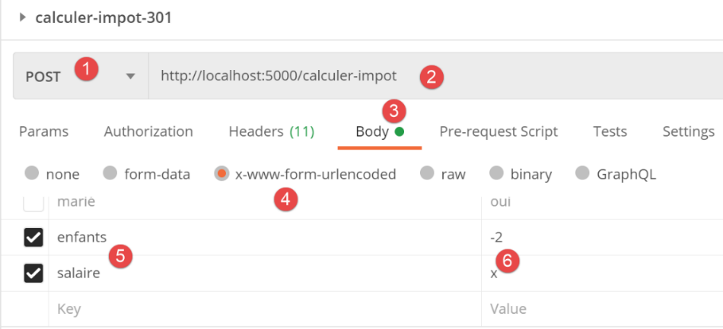
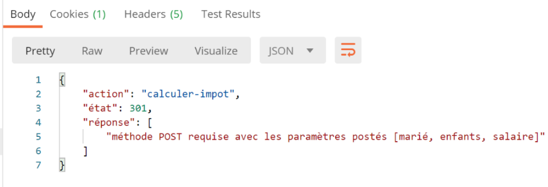

30. Practical Exercise: version 12
In this chapter, we will write a web application that follows the MVC architecture (Model-View-Controller). The application will be able to return responses in three formats: jSON, XML, HTML. There is a significant increase in complexity between what we are about to do and what we have done previously. We will reuse most of the concepts covered so far and will detail all the steps leading to the final application.
30.1. MVC Architecture
We will implement the so-called MVC architecture model (Model–View–Controller) as follows:

The processing of a client request will proceed as follows:
- 1 - Request
The requested URLs will be in the form http://machine:port/action/param1/param2/… The [Contrôleur principal] will use a configuration file to "route" the request to the correct controller. To do this, it will use the [action] field of the URL. The rest of the URL and [param1/param2/…] consists of optional parameters that will be passed to the action. The C in MVC is here the string [Contrôleur principal, Contrôleur / Action]. If no controller can handle the requested action, the web server will respond that the requested URL was not found.
- 2 - Processing
- The selected action [2a] can use the parameters parami that [Contrôleur principal] passed to it. These may come from two sources:
- the [/param1/param2/…] path of the URL,
- parameters posted in the body of the client's request;
- When processing the user's request, the action may require the [métier] and [2b] layers. Once the client's request has been processed, it may trigger various responses. A typical example is:
- an error response if the request could not be processed correctly;
- a confirmation response otherwise;
- [Contrôleur / Action] will return its response [2c] to the main controller along with a status code. These status codes will uniquely represent the current state of the application. It will be either a success code or an error code;
- 3 - response
- depending on whether the client requested a response jSON, XML, or HTML, [Contrôleur principal] will instantiate the appropriate response type and instruct it to send the response to the client. [Contrôleur principal] will pass it both the response and the status code provided by the executed [Contrôleur / Action];
- if the desired response is of type jSON or XML, the selected response will format the response from [Contrôleur / Action] that was provided to it and send it via [3c]. The client capable of processing this response can be a Python console script or a Javascript script hosted on a HTML page;
- if the desired response is of type HTML, the selected response will select [3b] one of the views HTML [Vuei] using the status code provided to it. This is the V for MVC. A single view corresponds to a single status code. This view V will display the response from the executed [Contrôleur / Action]. It formats the data from this response using HTML, CSS, and Javascript. This data is called the view model. It is the M in MVC. The client is most often a browser;
Now, let’s clarify the relationship between web architecture MVC and layered architecture. Depending on how the model is defined, these two concepts may or may not be related. Let’s consider a single-layer web application MVC:

In the diagram above, each [Contrôleur / Action] component incorporates parts of the [métier] and [dao] layers. In the [web] layer, we do have a MVC architecture, but the application as a whole does not have a layered architecture. Here, there is only one layer—the web layer—which does everything.
Now, let’s consider a multi-layer web architecture:

The [web] layer can be implemented without following the MVC model. We then have a multi-layer architecture, but the web layer does not implement the MVC model.
For example, in the .NET world, the [web] layercan be implemented with ASP.NET and MVC, resulting in a layered architecture with a [web] layer of type MVC. Once this is done, we can replace this ASP.NET MVC layer with a standard ASP.NET layer (WebForms) while keeping the rest (business logic, DAO, Driver) unchanged. We then have a layered architecture with a [web] layer that is no longer of type MVC.
In MVC, we stated that the M model was that of the V view, c.a.d—the set of data displayed by the V view. Another definition of the M model for MVC is provided:

Many authors consider that what is to the right of the layer [web] forms the model M of MVC. To avoid ambiguities, we can refer to:
- the domain model when referring to everything to the right of the [web] layer;
- the view model when referring to the data displayed by a view V;
In what follows, when we refer to the model, we are always referring to the view model.
30.2. Client/Server Application Architecture
The web application will have the following architecture:

- In [1], the web server will have two types of clients:
- in [2], a console client that will exchange jSON and XML with the server;
- in [3], a browser that will receive data from HTML on the server and display it;
- the [1] web server retains the [métier] and [dao] layers from previous versions;
- the web client [2] will be updated to account for the new URL service versions of the web application;
- The HTML application displayed by the browser must be written from scratch;
We will develop the application in several phases:
- We will develop the server-side version and jSON. We will test the server service URL one after another using a Postman client. This method allows us to build the framework of the web server without worrying about the application views (=HTML);
- after testing the jSON server with Postman, we will test it with a console client;
- then we will move on to the server’s version and XML. We saw that the transition from jSON to XML was straightforward;
- finally, we will move on to the server’s version and HTML. We will build a MVC architecture and define the views to be displayed. The HTML application will be tested using both the Postman client and a standard browser;
30.3. The server code directory structure

- in [1: the web server as a whole;
- in [2]: for now, we will ignore the [static, templates, tests_views] folders, which pertain to the server’s version and HTML. Outside of this folder, we will find the main script [main] and its configuration;
- in [3], the web server controllers. These will be class instances;
 |  |
- in [4], the server’s response HTTP will be handled by classes;
- in [5], we retain the log file from the previous servers;
When we build the server’s version HTML, other folders will be involved:
 |  |
- in [6], the static elements of the HTML application;
- in [7], the application templates HTML broken down into views [9] and view fragments [8];
- in [9], the classes implementing the view models;
30.4. The application’s service URL
To build the web server, we will proceed as follows:
- Starting from the application views HTML, we will define the actions that the web application must implement. We will use the actual views here, but these could simply be views on paper;
- Based on these actions, we will define the URL service components of the HTML application;
- we will implement these service endpoints using a server that serves web pages. This allows us to define the framework of the web server without worrying about the specific pages to be served. We will test these URL services using Postman;
- we will then test our jSON server with a console client;
- once the jSON server has been validated, we will move on to writing the HTML application;
The first view will be the authentication view:

- the action leading to this first view will be called [init-session] [1];
- Clicking the [Valider] button will trigger the [authentifier-utilisateur] action with two posted parameters [2-3];
The tax calculation view:

- in [1], the action [authentifier-utilisateur] that led to this view;
- In [2], clicking the [Valider] button triggers the execution of the [calculer-impot] action with three posted parameters [2-5];
- Clicking the link [6] triggers the action [lister-simulations] without parameters;
- Clicking the link [7] triggers the action [fin-session] without parameters;
The third view shows the simulations performed by the authenticated user:

- in [3], the action [lister-simulations] that led to this view;
- In [2], clicking the link [Supprimer] triggers the action [supprimer-simulation] with a parameter, the number of the simulation to be deleted from the list;
- clicking the link [3] triggers the action [afficher-calcul-impot] without parameters, which redisplays the tax calculation view;
- Clicking the [4] link triggers the [fin-session] action without parameters;
With this initial information, we can define the various URL server service actions:
Action | Role | Execution Context |
/init-session | Used to set the type (json, xml, html) of the desired responses | Request GET Can be issued at any time |
/authenticate-user | Authorizes or denies a user's login | Request POST. The request must have two posted parameters [user, password] Can only be issued if the session type (json, xml, html) is known |
/calculate-tax | Performs a tax calculation simulation | Query POST. The request must have three posted parameters [marié, enfants, salaire] Can only be issued if the session type (json, xml, html) is known and the user is authenticated |
/list-simulations | Requests a list of simulations performed since the start of the session | Request GET. Can only be issued if the session type (json, xml, html) is known and the user is authenticated |
/delete-simulation/number | Deletes a simulation from the list of simulations | Request GET. Can only be issued if the session type (json, xml, html) is known and the user is authenticated |
/display-tax-calculation | Displays the HTML tax calculation page | Request GET. Can only be issued if the session type (json, xml, html) is known and the user is authenticated |
/end-session | Ends the simulation session. | Technically, the old web session is deleted and a new session is created Can only be issued if the session type (json, xml, html) is known and the user is authenticated |
These various URL service tokens will be used for the HTML server as well as for the jSON or XML servers. Two URL entries will be used only for these last two servers: these are the URL entries from the previous version entry for the client/web server, which we include here:
Action | Role | Execution Context |
/get-admindata | Returns the tax data used to calculate the tax | Query GET. Used only if the session type is json or xml. The user must be authenticated |
/calculate-taxes | Calculates the tax for a list of taxpayers posted in jSON | Query GET. Used only if the session type is json or xml. The user must be authenticated |
All controllers associated with these actions will proceed in the same way:
- they will check their parameters. These are found in the object:
- [request.path] for parameters present in URL in the form [/action/param1/param2/…];
- in the [request.form] object for those transmitted in [x-www-form-urlencoded] in the body of the request;
- in the [request.data] object for those transmitted in jSON in the request body;
- A controller is similar to a function or method that checks the validity of its parameters. For the controller, however, it is a bit more complicated:
- the expected parameters may be missing;
- the parameters retrieved by the controller are strings. If the expected parameter is a number, then the controller must verify that the parameter’s string is indeed that of a number;
- once verified that the expected parameters are present and syntactically correct, it must be verified that they are valid within the current execution context. This context is present in the session. The authentication example is an example of an execution context. Certain actions should only be processed once the client has been authenticated. Generally, a key in the session indicates whether this authentication has taken place or not;
- once the previous checks have been completed, the secondary controller can proceed. This parameter verification process is very important. We cannot accept a client sending us arbitrary data at any point during the application’s lifecycle. We must maintain full control over its lifecycle;
- Once its work is done, the secondary controller returns a dictionary with the keys [action, état, réponse] to the primary controller that called it:
- [action] is the action that has just been executed;
- [état] is a three-digit number indicating the result of the action’s processing;
- [x00] indicates successful processing;
- [x01] indicates a processing failure;
- [réponse] is the results dictionary in the form {‘response’:object}. The object will have different structures depending on the action being processed;
We will now review the various controllers—or, in other words, the different actions that these controllers handle and that drive the web application’s behavior.
30.5. Server configuration

The configuration of the [config_database] database and that of the [config_layers] server layers are identical to those of previous versions. The [config] file now contains new information:
def configure(config: dict) -> dict:
import os
# step 1 ------
# folder of this file
script_dir = os.path.dirname(os.path.abspath(__file__))
# root path
root_dir = "C:/Data/st-2020/dev/python/cours-2020/python3-flask-2020"
# dependencies
absolute_dependencies = [
# project files
# BaseEntity, MyException
f"{root_dir}/classes/02/entities",
# InterfaceImpôtsDao, InterfaceImpôtsMétier, InterfaceImpôtsUi
f"{root_dir}/impots/v04/interfaces",
# AbstractImpôtsdao, ImpôtsConsole, ImpôtsMétier
f"{root_dir}/impots/v04/services",
# ImpotsDaoWithAdminDataInDatabase
f"{root_dir}/impots/v05/services",
# AdminData, ImpôtsError, TaxPayer
f"{root_dir}/impots/v04/entities",
# Constants, slices
f"{root_dir}/impots/v05/entities",
# Logger, SendAdminMail
f"{root_dir}/impots/http-servers/02/utilities",
# scripts [config_database, config_layers]
script_dir,
# controllers
f"{script_dir}/../controllers",
# answers HTTP
f"{script_dir}/../responses",
# view models
f"{script_dir}/../models_for_views",
]
# set the syspath
from myutils import set_syspath
set_syspath(absolute_dependencies)
# web server dependencies
# controllers
from AfficherCalculImpotController import AfficherCalculImpotController
from AuthentifierUtilisateurController import AuthentifierUtilisateurController
from CalculerImpotController import CalculerImpotController
from CalculerImpotsController import CalculerImpotsController
from FinSessionController import FinSessionController
from GetAdminDataController import GetAdminDataController
from InitSessionController import InitSessionController
from ListerSimulationsController import ListerSimulationsController
from MainController import MainController
from SupprimerSimulationController import SupprimerSimulationController
# answers HTTP
from HtmlResponse import HtmlResponse
from JsonResponse import JsonResponse
from XmlResponse import XmlResponse
# view models
from ModelForAuthentificationView import ModelForAuthentificationView
from ModelForCalculImpotView import ModelForCalculImpotView
from ModelForErreursView import ModelForErreursView
from ModelForListeSimulationsView import ModelForListeSimulationsView
# step 2 ------
# application configuration
config.update({
# users authorized to use the application
"users": [
{
"login": "admin",
"password": "admin"
}
],
# log file
"logsFilename": f"{script_dir}/../data/logs/logs.txt",
# config server SMTP
"adminMail": {
# server SMTP
"smtp-server": "localhost",
# server port SMTP
"smtp-port": "25",
# director
"from": "guest@localhost.com",
"to": "guest@localhost.com",
# mail subject
"subject": "plantage du serveur de calcul d'impôts",
# tls to True if server SMTP requires authorization, False otherwise
"tls": False
},
# thread pause time in seconds
"sleep_time": 0,
# authorized shares and their controllers
"controllers": {
# initialization of a calculation session
"init-session": InitSessionController(),
# user authentication
"authentifier-utilisateur": AuthentifierUtilisateurController(),
# tax calculation in individual mode
"calculer-impot": CalculerImpotController(),
# batch mode tax calculation
"calculer-impots": CalculerImpotsController(),
# list of simulations
"lister-simulations": ListerSimulationsController(),
# deleting a simulation
"supprimer-simulation": SupprimerSimulationController(),
# end of calculation session
"fin-session": FinSessionController(),
# display tax calculation view
"afficher-calcul-impot": AfficherCalculImpotController(),
# obtaining data from tax authorities
"get-admindata": GetAdminDataController(),
# main controller
"main-controller": MainController()
},
# different types of response (json, xml, html)
"responses": {
"json": JsonResponse(),
"html": HtmlResponse(),
"xml": XmlResponse()
},
# HTML views and their models depend on the state rendered by the controller
"views": [
{
# authentication view
"états": [
# /init-session success
700,
# /authentifier-user failure
201
],
"view_name": "views/vue-authentification.html",
"model_for_view": ModelForAuthentificationView()
},
{
# tax calculation
"états": [
# /authentifier-user success
200,
# /calculate-tax-success
300,
# /calculate-tax failure
301,
# /show-tax-calculation
800
],
"view_name": "views/vue-calcul-impot.html",
"model_for_view": ModelForCalculImpotView()
},
{
# view of simulation list
"états": [
# /lister-simulations
500,
# /suppress-simulation
600
],
"view_name": "views/vue-liste-simulations.html",
"model_for_view": ModelForListeSimulationsView()
}
],
# view of unexpected errors
"view-erreurs": {
"view_name": "views/vue-erreurs.html",
"model_for_view": ModelForErreursView()
},
# redirections
"redirections": [
{
"états": [
400, # /end-session successful
],
# redirection to
"to": "/init-session/html",
}
],
}
)
# step 3 ------
# database configuration
import config_database
config["database"] = config_database.configure(config)
# step 4 ------
# instantiation of application layers
import config_layers
config['layers'] = config_layers.configure(config)
# we return the configuration
return config
- Up to line 41, we see standard elements;
- lines 43–66: by line 43, the server’s Python Path is defined. We can then import the project’s dependencies:
- lines 45–55: the list of controllers;
- lines 57–60: the list of HTTP responses;
- lines 62–66: the list of view templates;
- lines 68–189: the application configuration with a series of constants;
- lines 71–98: we are already familiar with these lines from previous versions;
- lines 101–122: the controller dictionary:
- the keys are the names of the actions;
- the values are an instance of the controller responsible for handling that action. Each controller is instantiated as a single instance (singleton). The same instance will be executed by different server threads. Therefore, care must be taken with shared data that each controller might want to modify;
- lines 125–129: the dictionary of the three possible responses HTTP:
- the keys are the type of response requested by the client (jSON, xml, html);
- the values are an instance of the response HTTP. Each response generator is instantiated as a single instance (singleton). The same generator will be executed by different server threads. Care must therefore be taken with shared data that each generator might want to modify;
- lines 132–186: configuration of the HTML views. For now, we will ignore these lines;
- lines 191–202: we have already encountered these lines in previous versions;
30.6. The path of a client request within the server
We will follow the path of a client request arriving at the server until the HTTP response is sent back. It follows the path of the MVC server.
30.6.1. The [main] script
The [main] script is identical in many ways to that of previous versions. We are nevertheless providing it in its entirety to ensure a solid foundation:
# a mysql or pgres parameter is expected
import sys
syntaxe = f"{sys.argv[0]} mysql / pgres"
erreur = len(sys.argv) != 2
if not erreur:
sgbd = sys.argv[1].lower()
erreur = sgbd != "mysql" and sgbd != "pgres"
if erreur:
print(f"syntaxe : {syntaxe}")
sys.exit()
# configure the application
import config
config = config.configure({'sgbd': sgbd})
# dependencies
from flask import request, Flask, session, url_for, redirect
from flask_api import status
from SendAdminMail import SendAdminMail
from myutils import json_response
from Logger import Logger
import threading
import time
from random import randint
from ImpôtsError import ImpôtsError
import os
# send an e-mail to the administrator
def send_adminmail(config: dict, message: str):
# send an e-mail to the application administrator
config_mail = config["adminMail"]
config_mail["logger"] = config['logger']
SendAdminMail.send(config_mail, message)
# check log file
logger = None
erreur = False
message_erreur = None
try:
# logger
logger = Logger(config["logsFilename"])
except BaseException as exception:
# log console
print(f"L'erreur suivante s'est produite : {exception}")
# we note the error
erreur = True
message_erreur = f"{exception}"
# the logger is stored in config
config['logger'] = logger
# error handling
if erreur:
# mail to administrator
send_adminmail(config, message_erreur)
# end of application
sys.exit(1)
# start-up log
log = "[serveur] démarrage du serveur"
logger.write(f"{log}\n")
print(log)
# data recovery from tax authorities
erreur = False
try:
# admindata will be read-only application data
config["admindata"] = config["layers"]["dao"].get_admindata().asdict()
# success log
logger.write("[serveur] connexion à la base de données réussie\n")
except ImpôtsError as ex:
# we note the error
erreur = True
# error log
log = f"L'erreur suivante s'est produite : {ex}"
# console
print(log)
# log file
logger.write(f"{log}\n")
# mail to administrator
send_adminmail(config, log)
# the main thread no longer needs the logger
logger.close()
# if there has been an error, we stop
if erreur:
sys.exit(2)
# flask application
app = Flask(__name__, template_folder="templates", static_folder="static")
# session secret key
app.secret_key = os.urandom(12).hex()
# the front controller
def front_controller() -> tuple:
# we process the request
logger = None
…
@app.route('/', methods=['GET'])
def index() -> tuple:
# redirect to /init-session/html
return redirect(url_for("init_session", type_response="html"), status.HTTP_302_FOUND)
# init-session
@app.route('/init-session/<string:type_response>', methods=['GET'])
def init_session(type_response: str) -> tuple:
# execute the controller associated with the action
return front_controller()
# authenticate-user
@app.route('/authentifier-utilisateur', methods=['POST'])
def authentifier_utilisateur() -> tuple:
# execute the controller associated with the action
return front_controller()
# calculate-tax
@app.route('/calculer-impot', methods=['POST'])
def calculer_impot() -> tuple:
# execute the controller associated with the action
return front_controller()
# lister-simulations
@app.route('/lister-simulations', methods=['GET'])
def lister_simulations() -> tuple:
# execute the controller associated with the action
return front_controller()
# delete-simulation
@app.route('/supprimer-simulation/<int:numero>', methods=['GET'])
def supprimer_simulation(numero: int) -> tuple:
# execute the controller associated with the action
return front_controller()
# end of session
@app.route('/fin-session', methods=['GET'])
def fin_session() -> tuple:
# execute the controller associated with the action
return front_controller()
# display-calculation-tax
@app.route('/afficher-calcul-impot', methods=['GET'])
def afficher_calcul_impot() -> tuple:
# execute the controller associated with the action
return front_controller()
# get-admindata
@app.route('/get-admindata/<int:numero>', methods=['GET'])
def get_admindata() -> tuple:
# execute the controller associated with the action
return front_controller()
# hand only
if __name__ == '__main__':
# start the server
app.config.update(ENV="development", DEBUG=True)
app.run(threaded=True)
- lines 1–92: all these lines have already been covered and explained;
- line 92: the server will manage a session. We therefore need a secret key. For each user, we will store two pieces of information in the session:
- whether the user has authenticated successfully;
- every time they perform a tax calculation, the results of that calculation will be placed in a list we’ll call the user’s simulation list. This list will be stored in the session;
- lines 100–151: the list of server service endpoints. The associated functions act as a filter: any requests not present in this list will be rejected by the Flask server with an error. Once this filtering is complete, the request is systematically forwarded to a ‘Front Controller’ implemented by the [front_controller] function in lines 94–98, which we will discuss shortly;
- Lines 100–103: handling the [/] route. The entry point for the web application will be URL on line 107. Also on line 103, we redirect the client to this URL:
- The [url_for] function is imported on line 18. It has two parameters here:
- the first parameter is the name of one of the routing functions, in this case the one on line 107. We see that this function expects a parameter [type_response], which is the type (json, xml, html) of response desired by the client;
- the second parameter takes the name of the parameter from line 107, [type_response], and assigns a value to it. If there were other parameters, we would repeat the operation for each of them;
- it returns the URL associated with the function designated by the two parameters provided to it. Here, this will return the URL from line 106, where the parameter is replaced by its value [/init-session/html];
- The [redirect] function was imported on line 18. Its role is to send a HTTP redirection header to the client:
- the first parameter is the URL to which the client must be redirected;
- the second parameter is the status code of the HTTP response sent to the client. The code [status.HTTP_302_FOUND] corresponds to a HTTP redirection;
The [front_controller] function in lines 94–98 performs the initial processing of the client’s request:
# the front controller
def front_controller() -> tuple:
# the request is processed
logger = None
try:
# logger
logger = Logger(config["logsFilename"])
# we store it in a config associated with the thread
thread_config = {"logger": logger}
thread_name = threading.current_thread().name
config[thread_name] = {"config": thread_config}
# log the request
logger.write(f"[ front_controller] requête : {request}\n")
# the thread is interrupted if requested
sleep_time = config["sleep_time"]
if sleep_time != 0:
# pause is randomized so that some threads are interrupted and others not
aléa = randint(0, 1)
if aléa == 1:
# log before break
logger.write(f"[ front_controller] mis en pause du thread pendant {sleep_time} seconde(s)\n")
# break
time.sleep(sleep_time)
# forward the request to the main controller
main_controller = config['controllers']["main-controller"]
résultat, status_code = main_controller.execute(request, session, config)
# we log the result sent to the customer
log = f"[front_controller] {résultat}\n"
logger.write(log)
# was there a fatal error?
if status_code == status.HTTP_500_INTERNAL_SERVER_ERROR:
# send an e-mail to the application administrator
send_adminmail(config, log)
# determine the desired type of response
if session.get('typeResponse') is None:
# the session type has not yet been set - it will be jSON
type_response = 'json'
else:
type_response = session['typeResponse']
# build the response to be sent
response_builder = config["responses"][type_response]
response, status_code = response_builder \
.build_http_response(request, session, config, status_code, résultat)
# we send the answer
return response, status_code
except BaseException as erreur:
# it's an unexpected error - log the error if possible
if logger:
logger.write(f"[ front_controller] {erreur}")
# we prepare the response to the customer
résultat = {"réponse": {"erreurs": [f"{erreur}"]}}
# we send a response in jSON
return json_response(résultat, status.HTTP_500_INTERNAL_SERVER_ERROR)
finally:
# close the log file if it has been opened
if logger:
logger.close()
- Lines 1–57: We are familiar with this code. For example, it was the code for the function named [main] in the [main] script from the previous version. One thing to note is the controller used in lines 25–26:
- Line 25: Retrieve the controller instance associated with the name [main-controller] from the configuration. These are the following lines:
# web server dependencies
# controllers
…
from MainController import MainController
# authorized shares and their auditors
"controllers": {
…,
# main controller
"main-controller": MainController()
},
- (continued)
- line 10 above, note that we are retrieving a class instance;
- line 26: we ask the [MainController] controller to process the request;
- lines 30–45: the response returned by the [MainController] controller is sent to the client. We will return to these lines a little later;
The job of the [front_controller] function and then the [MainController] class is to perform the tasks common to all requests:
In the diagram above, we are still in phase 1 of the request processing. The main controller [MainController] will continue with step 1.
30.6.2. The main controller [MainController]
The main controller [MainController] continues the work started by the function [front_controller]:
All controllers implement the following [InterfaceController] [2] interface:

from abc import ABC, abstractmethod
from werkzeug.local import LocalProxy
class InterfaceController(ABC):
@abstractmethod
def execute(self, request: LocalProxy, session: LocalProxy, config: dict) -> (dict, int):
pass
- The [InterfaceController] interface defines only the single method [execute] on line 8. This method takes three parameters:
- [request]: the client request;
- [session]: the client session;
- [config]: the application configuration;
The [execute] method returns a two-element tuple:
- the first is the results dictionary in the form {‘action’: action, ‘status’: status, ‘response’: results};
- the second is the status code HTTP to be returned to the client;
The main controller [MainController] [1] implements the [InterfaceController] interface as follows:
# import dependencies
from flask_api import status
from werkzeug.local import LocalProxy
# web application controllers
from InterfaceController import InterfaceController
class MainController(InterfaceController):
def execute(self, request: LocalProxy, session: LocalProxy, config: dict) -> (dict, int):
# retrieve elements from path
params = request.path.split('/')
action = params[1]
# errors
erreur = False
# session type must be known prior to certain actions
type_response = session.get('typeResponse')
if type_response is None and action != "init-session":
# we note the error
résultat = {"action": action, "état": 101,
"réponse": ["pas de session en cours. Commencer par action [init-session]"]}
erreur = True
# some actions require authentication
user = session.get('user')
if not erreur and user is None and action not in ["init-session", "authentifier-utilisateur"]:
# we note the error
résultat = {"action": action, "état": 101,
"réponse": [f"action [{action}] demandée par utilisateur non authentifié"]}
erreur = True
# are there any mistakes?
if erreur:
# an error msg is returned
return résultat, status.HTTP_400_BAD_REQUEST
else:
# execute the controller associated with the action
controller = config["controllers"][action]
résultat, status_code = controller.execute(request, session, config)
return résultat, status_code
The [MainController] controller performs the initial checks to validate the request.
- Lines 11–13: The controller begins by retrieving the action requested by the client. Note that service URLs are of the form [/action/param1/param2/…] and that this URL is in [request.path];
- Lines 17–23: The [init-session] action is used to initialize the response type (json, xml, html) requested by the client. This information is stored in the session associated with the key [typeRéponse]. Therefore, if the action is not [init-session], then the session must contain the key [typeRéponse]; otherwise, the request is invalid;
- Lines 21–22: The structure of the result returned by each controller, in this case an error result:
- [action]: is the name of the current action. This will allow us to retrieve its name when logging the result of the request;
- [état]: is a three-digit status code:
- [x00] for a success;
- [x01] for a failure;
- [réponse]: is the response to the request. Its nature is specific to each request;
- lines 24–30: the action [authentifier-utilisateur] is used to authenticate the user. If successful, a token [user=True] is placed in the user’s session. Certain service URL actions are accessible only to an authenticated user. This is what is being verified here;
- line 26: only the [init-session] and [authentifier-utilisateur] actions can be performed by a user who has not yet been authenticated;
- lines 28–29: the response to send in case of an error;
- lines 32–34: if either of the two previous errors occurred, then we send the error response to the client with status HTTP 400 BAD REQUEST;
- lines 35–39: if no error occurred, control is passed to the controller responsible for handling the current action. Its instance is found in the application configuration;
The [MainController] class continues the work of the [front_controller] function: together, they handle everything that can be factored out of request processing, waiting until the last moment to pass the request to a specific controller. The division of code between the [front_controller] function and the [MainController] class is entirely subjective. Here, I wanted to preserve the legacy of the previous version: the [front_controller] function already existed under the name [main]. In practice, one could:
- put everything into the [front_controller] function and eliminate the [MainController] class;
- put everything into the [MainController] class and remove the [front_controller] function. I would tend to choose this solution because it has the advantage of streamlining the code of the main script [main];
30.7. Action-specific processing
Let’s return to the application’s MVC architecture:
We are still at step 1 above. If there were no errors, step 2 will begin. The request has been forwarded to the controller specific to the action requested by the request. Let’s assume this action is [/init-session], defined by the route:
# init-session
@app.route('/init-session/<string:type_response>', methods=['GET'])
def init_session(type_response: str) -> tuple:
# execute the controller associated with the action
return front_controller()
This action is linked to a controller in the [config] configuration:
# authorized shares and their auditors
"controllers": {
# initialization of a calculation session
"init-session": InitSessionController(),
…
},
The [InitSessionController] controller (line 4) then takes over. Its code is as follows:
from flask_api import status
from werkzeug.local import LocalProxy
from InterfaceController import InterfaceController
class InitSessionController(InterfaceController):
def execute(self, request: LocalProxy, session: LocalProxy, config: dict) -> (dict, int):
# retrieve elements from path
dummy, action, type_response = request.path.split('/')
# initially no error
erreur = False
# check response type
if type_response not in config['responses'].keys():
erreur = True
résultat = {"action": action, "état": 701,
"réponse": [f"paramètre [type={type_response}] invalide"]}
# if no error
if not erreur:
# set the session type in the flask session
session['typeResponse'] = type_response
résultat = {"action": action, "état": 700,
"réponse": [f"session démarrée avec le type de réponse {type_response}"]}
return résultat, status.HTTP_200_OK
else:
return résultat, status.HTTP_400_BAD_REQUEST
- line 6: like the other controllers, the [InitSessionController] controller implements the [InterfaceController] interface;
- line 10: URL is of type [/init-session/type_response]. We retrieve the [init-session] action and the desired response type;
- line 15: the desired response type can only be one of those present in the response configuration:
# different types of response (json, xml, html)
"responses": {
"json": JsonResponse(),
"html": HtmlResponse(),
"xml": XmlResponse()
},
- if not, prepare a 701 error response (line 17);
- lines 20–25: case where the desired response type is valid;
- line 22: the desired response type is stored in the session. This is because we will need to remember it for subsequent requests;
- lines 23–24: a 700 success response is prepared;
- line 25: the success response is returned to the calling code;
- line 27: if an error occurred, the error response is returned to the calling code;
30.8. Generating the server's response HTTP
Let’s return to the application’s MVC architecture:
We have just covered steps 1 and 2. We encountered three status codes:
- 700: /init-session succeeded;
- 701: /init-session failed;
- 101: invalid request, either because the session was not initialized or because the user is not authenticated;
Let’s examine how the server’s response is sent to the client during step 3 above. This occurs in the [front_controller] function of the [main] script:
# the front controller
def front_controller() -> tuple:
# the request is processed
logger = None
try:
# logger
logger = Logger(config["logsFilename"])
# we store it in a config associated with the thread
thread_config = {"logger": logger}
thread_name = threading.current_thread().name
config[thread_name] = {"config": thread_config}
# log the request
logger.write(f"[ front_controller] requête : {request}\n")
# the thread is interrupted if requested
sleep_time = config["sleep_time"]
if sleep_time != 0:
# pause is randomized so that some threads are interrupted and others not
aléa = randint(0, 1)
if aléa == 1:
# log before break
logger.write(f"[ front_controller] mis en pause du thread pendant {sleep_time} seconde(s)\n")
# break
time.sleep(sleep_time)
# forward the request to the main controller
main_controller = config['controllers']["main-controller"]
résultat, status_code = main_controller.execute(request, session, config)
# we log the result sent to the customer
log = f"[front_controller] {résultat}\n"
logger.write(log)
# was there a fatal error?
if status_code == status.HTTP_500_INTERNAL_SERVER_ERROR:
# send an e-mail to the application administrator
send_adminmail(config, log)
# determine the desired type of response
if session.get('typeResponse') is None:
# the session type has not yet been set - it will be jSON
type_response = 'json'
else:
type_response = session['typeResponse']
# build the response to be sent
response_builder = config["responses"][type_response]
response, status_code = response_builder \
.build_http_response(request, session, config, status_code, résultat)
# we send the answer
return response, status_code
except BaseException as erreur:
# it's an unexpected error - log the error if possible
if logger:
logger.write(f"[ front_controller] {erreur}")
# we prepare the response to the customer
résultat = {"réponse": {"erreurs": [f"{erreur}"]}}
# we send a response in jSON
return json_response(résultat, status.HTTP_500_INTERNAL_SERVER_ERROR)
finally:
# close the log file if it has been opened
if logger:
logger.close()
- We are now on line 26: the main controller has returned its error response;
- lines 27–29: regardless of the main controller’s response (success or failure), this response is logged in the log file;
- lines 30–33: as in previous versions, if the status HTTP is [500 INTERNAL SERVER ERROR], we send an email to the application administrator with the error log;
- lines 34–39: we will send the response HTTP, and the result returned by the controller will be placed in the body of this response. We need to know in which format (json, xml, html) the client wants this response. We look for the desired response type in the session. If it is not there, then we arbitrarily set this type to jSON;
- lines 40–43: the response HTTP is constructed;
In the configuration file, each response type (json, xml, html) has been associated with a class instance:
# different types of response (json, xml, html)
"responses": {
"json": JsonResponse(),
"html": HtmlResponse(),
"xml": XmlResponse()
},
The response classes are located in the [responses] folder of the server directory tree:

Each response class implements the following [InterfaceResponse] interface:
from abc import ABC, abstractmethod
from flask.wrappers import Response
from werkzeug.local import LocalProxy
class InterfaceResponse(ABC):
@abstractmethod
def build_http_response(self, request: LocalProxy, session: LocalProxy, config: dict, status_code: int,
résultat: dict) -> (Response, int):
pass
- lines 8-11: the [InterfaceResponse] interface defines a single method, [build_http_response], with the following parameters:
- [request, session, config]: these are the parameters received by the action controller;
- [résultat, status_code]: these are the results produced by the action controller;
We will present the response jSON. It is produced by the following class [JsonResponse]:
import json
from flask import make_response
from flask.wrappers import Response
from werkzeug.local import LocalProxy
from InterfaceResponse import InterfaceResponse
class JsonResponse(InterfaceResponse):
def build_http_response(self, request: LocalProxy, session: LocalProxy, config: dict, status_code: int,
résultat: dict) -> (Response, int):
# results: the results dictionary
# status_code: status code of the HTTP response
# we return the answer HTTP
response = make_response(json.dumps(résultat, ensure_ascii=False))
response.headers['Content-Type'] = 'application/json; charset=utf-8'
return response, status_code
We are familiar with this code, which we have encountered many times. It is the code for the [json_response] function in the [myutils] module.
30.9. Initial Tests
In the code we examined, we encountered three status codes:
- 700: /init-session succeeded;
- 701: /init-session failed;
- 101: invalid request, either because the session was not initialized or because the user is not authenticated;
We will try to trigger these with a session named jSON.
- We start the web server, SGBD, and the mail server;
- We launch a Postman client;
Test 1
First, we show an invalid request because the session has not been initialized:

- [1-2]: the request [POST http://localhost:5000/authentifier-utilisateur] is a valid route:
# authenticate-user
@app.route('/authentifier-utilisateur', methods=['POST'])
def authentifier_utilisateur() -> tuple:
# execute the controller associated with the action
return front_controller()
but it is only accepted if the session has been initialized beforehand with the action [/init-session].
Let’s execute the request and see the response sent by the server:

- [1-2]: we received a response jSON. When the response type has not yet been specified by the client, the server uses jSON to respond;
- [3-5]: the jSON dictionary from the response;
- [action]: the action that was performed;
- [état]: the response status code. A code of [x01] indicates an error;
- [réponse]: is specific to each action. Here it contains an error message;
Now let’s initialize a session with an incorrect response type:

- [1-2] is a valid route:
# init-session
@app.route('/init-session/<string:type_response>', methods=['GET'])
def init_session(type_response: str) -> tuple:
# execute the controller associated with the action
return front_controller()
It will therefore enter the request processing pipeline of the MVC server. However, it should be rejected during this processing because the requested session type is incorrect.
The response is as follows:

- in [4], an error code [x01];
- in [5], the error explanation;
Now, let’s initialize a jSON session:

The response is as follows:

Now, let’s initialize a XML session. The jSON response will be replaced by a XML response generated by the following [XmlResponse] class:
import xmltodict
from flask import make_response
from flask.wrappers import Response
from werkzeug.local import LocalProxy
from InterfaceResponse import InterfaceResponse
from Logger import Logger
class XmlResponse(InterfaceResponse):
def build_http_response(self, request: LocalProxy, session: LocalProxy, config: dict, status_code: int,
résultat: dict) -> (Response, int):
# results: the results dictionary
# status_code: status code of the HTTP response
# result: the dictionary to be transformed into the XML string
xml_string = xmltodict.unparse({"root": résultat})
# we return the answer HTTP
response = make_response(xml_string)
response.headers['Content-Type'] = 'application/xml; charset=utf-8'
return response, status_code
This is code we are familiar with, from the [xml_response] function in the shared module [myutils].
We initialize a XML session:

The server’s response is then as follows:

We get the same response as in jSON, but this time the response is wrapped in XML.
30.10. The [authentifier-utilisateur] action
The [authentifier-utilisateur] action allows a user who wishes to use the tax calculation application to authenticate. Its route is defined as follows in the [main] script:
# authenticate-user
@app.route('/authentifier-utilisateur', methods=['POST'])
def authentifier_utilisateur() -> tuple:
# execute the controller associated with the action
return front_controller()
The server expects two POST parameters:
- [user]: the user's ID;
- [password]: their password;
The list of authorized users is defined in the configuration [config]:
# users authorized to use the application
"users": [
{
"login": "admin",
"password": "admin"
}
],
Here, we have a list with a single element.
The action [authentifier-utilisateur] is handled by the following controller [AuthentifierUtilisateurController]:
from flask_api import status
from werkzeug.local import LocalProxy
from InterfaceController import InterfaceController
from Logger import Logger
class AuthentifierUtilisateurController(InterfaceController):
def execute(self, request: LocalProxy, session: LocalProxy, config: dict) -> (dict, int):
# retrieve elements from path
dummy, action = request.path.split('/')
# POST parameters
post_params = request.form
# response status code HTTP
status_code = None
# initially no errors
erreur = False
erreurs = []
# you need a POST with two parameters
if len(post_params) != 2:
erreur = True
status_code = status.HTTP_400_BAD_REQUEST
erreurs.append("méthode POST requise, paramètre [action] dans l'URL, paramètres postés [user, password]")
if not erreur:
# retrieve POST parameters
# parameter [user]
user = post_params.get("user")
if user is None:
erreur = True
erreurs.append("paramètre [user] manquant")
# parameter [password]
password = post_params.get("password")
if password is None:
erreur = True
erreurs.append("paramètre [password] manquant")
# mistake?
if erreur:
status_code = status.HTTP_400_BAD_REQUEST
# mistake?
if not erreur:
# check the validity of the (user, password) pair
users = config['users']
i = 0
nbusers = len(users)
trouvé = False
while not trouvé and i < nbusers:
trouvé = user == users[i]["login"] and password == users[i]["password"]
i += 1
# found?
if not trouvé:
# we note the error
erreur = True
status_code = status.HTTP_401_UNAUTHORIZED
erreurs.append(f"Echec de l'authentification")
else:
# note in the session that the user has been found
session["user"] = True
# it's over
if not erreur:
# error-free return
résultat = {"action": action, "état": 200, "réponse": f"Authentification réussie"}
return résultat, status.HTTP_200_OK
else:
# return with error
return {"action": action, "état": 201, "réponse": erreurs}, status_code
- line 14: retrieves the parameters from POST;
- line 19: the list of errors found in the request;
- lines 20–24: we verify that there are indeed two posted parameters;
- lines 27–31: we check for the presence of a [users] parameter;
- lines 32–36: check for the presence of a [password] parameter;
- lines 38–39: if the posted parameters are incorrect, prepare a response: HTTP 400 BAD REQUEST;
- lines 40–58: verify that the credentials [user, password] belong to a user authorized to use the application;
- lines 51–55: if the user (username, password) is not authorized to use the application, prepare a response HTTP 401 UNAUTHORIZED;
- lines 56–58: if the user is authorized, then we record in the session using the key [user] that the user has authenticated;
Note that if the user was authenticated with the credentials [identifiants1] and fails to authenticate with the credentials [identifiants2], they remain authenticated with the credentials [identifiants1].
Let’s run some Postman tests:
- We start the web server, SGBD, and the mail server;
- using the Postman client:
- start a session with jSON;
- then we authenticate;
Here are different scenarios.
Case 1: POST with no posted parameters

- In [3-5], POST has no body;
The result of the request is as follows:

- in [2], we received a response HTTP 400 BAD REQUEST;
- for [5], we received an error code [201];
Case 2: POST with incorrect credentials

- in [6], the credentials are incorrect;
The server sends the following response:

- In [2], the response is HTTP 401 UNAUTHORIZED;
- in [5], the error response;
Case 2: POST with correct credentials

- in [6], the credentials are correct;
The server response is as follows:
- in [2], a response HTTP 200 OK;

- In [5], the success response;
30.11. The [calculer_impot] action
The [calculer_impot] action calculates a taxpayer’s tax. Its path is defined as follows in the [main] script:
# calculate-tax
@app.route('/calculer-impot', methods=['POST'])
def calculer_impot() -> tuple:
# execute the controller associated with the action
return front_controller()
The server expects three posted parameters:
- [marié]: yes / no;
- [enfants]: number of the taxpayer’s children;
- [salaire]: taxpayer's annual income;
The [CalculerImpotController] controller processes the [calculer_impot] action:
import re
from flask_api import status
from werkzeug.local import LocalProxy
from InterfaceController import InterfaceController
from TaxPayer import TaxPayer
class CalculerImpotController(InterfaceController):
def execute(self, request: LocalProxy, session: LocalProxy, config: dict) -> (dict, int):
# retrieve elements from path
dummy, action = request.path.split('/')
# no error at start
erreur = False
erreurs = []
# POST parameters
post_params = request.form
# you need a POST with three parameters
if len(post_params) != 3:
erreur = True
erreurs.append(
"méthode POST requise avec les paramètres postés [marié, enfants, salaire]")
# analyze posted parameters
if not erreur:
# married parameter
marié = post_params.get("marié")
if marié is None:
erreurs.append("paramètre [marié] manquant")
else:
# is the parameter valid?
marié = marié.lower()
if marié != "oui" and marié != "non":
erreur = True
erreurs.append(f"valeur [{marié}] invalide pour le paramètre [marié (oui/non)]")
# children] parameter
enfants = post_params.get("enfants")
if enfants is None:
erreur = True
erreurs.append("paramètre [enfants] manquant")
else:
# is the parameter valid?
enfants = enfants.strip()
match = re.match(r"\d+", enfants)
if not match:
erreur = True
erreurs.append(f"valeur [{enfants}] invalide pour le paramètre [enfants (entier>=0)]")
# salary parameter
salaire = post_params.get("salaire")
if salaire is None:
erreur = True
erreurs.append("paramètre [salaire] manquant")
else:
# is the parameter valid?
salaire = salaire.strip()
match = re.match(r"\d+", salaire)
if not match:
erreur = True
erreurs.append(f"valeur [{salaire}] invalide pour le paramètre [salaire (entier>=0)]")
# mistake?
if erreur:
status_code = status.HTTP_400_BAD_REQUEST
résultat = {"action": action, "état": 301, "réponse": erreurs}
# we return the result
return résultat, status_code
# tAX CALCULATION
# retrieve the [business] layer and the [adminData] dictionary
métier = config["layers"]["métier"]
admin_data = config["admindata"]
# tAX CALCULATION
taxpayer = TaxPayer().fromdict({'marié': marié, 'enfants': enfants, 'salaire': salaire})
métier.calculate_tax(taxpayer, admin_data)
# simulation no
id_simulation = session.get('id_simulation', 0)
id_simulation += 1
session['id_simulation'] = id_simulation
# we put the result in session in the form of a TaxPayer dictionary
simulation = taxpayer.fromdict({'id': id_simulation}).asdict()
# we add the result to the list of simulations already carried out and put it in session
simulations = session.get("simulations", [])
simulations.append(simulation)
session["simulations"] = simulations
# result
résultat = {"action": action, "état": 300, "réponse": simulation}
status_code = status.HTTP_200_OK
# we return the result
return résultat, status_code
- line 13: retrieve the name of the current action;
- line 17: we collect the errors in a list;
- line 19: retrieve the posted parameters. These are posted in the form [x-www-form-urlencoded], which is why we retrieve them as [request.form]. If they had been posted as jSON, we would have retrieved them as [request.data];
- lines 21–24: we verify that there are indeed three posted parameters;
- lines 27–36: verification of the presence and validity of the posted parameter [marié];
- lines 37-48: check for the presence and validity of the posted parameter [enfants];
- lines 49–60: verify the presence and validity of the posted parameter [salaire];
- lines 62–66: if an error occurred, send a 400 error response BAD REQUEST with a status code [301];
- lines 69–71: if there was no error, we prepare to calculate the tax. To do this,
- line 70: a reference is retrieved from the [métier] layer;
- line 71: retrieve data from the tax authority in the server configuration;
- lines 72–74: the taxpayer’s tax is calculated;
- lines 75–77: we count the number of tax calculations performed by the user;
- line 76: the number of the last calculation performed is retrieved from the session. Here, the result of a calculation is referred to as [simulation];
- line 77: we increment the number of the last simulation;
- line 78: we store this number in the session;
- lines 79–84: to track the calculations performed by the user, we will store the list of simulations they have performed in their session;
- line 80: a simulation will be the dictionary of an object TaxPayer, whose property [id] will have the simulation number as its value;
- lines 82–84: the current simulation is added to the list of simulations in the session;
- lines 86–87: a success response HTTP is prepared;
- line 90: the result is returned;
Let’s run some tests: the web server, SGBD, the mail server, and a Postman client are launched.
Case 1: performing a tax calculation while the session is not initialized

The response is as follows:

Case 2: performing a tax calculation without being authenticated
First, we start a jSON session with [/init-session/json]. Then we make the same request as before. The response is as follows:

Case 3: Performing a tax calculation with missing parameters
We initialize a jSON session, authenticate, and then make the following request:

- In [5], the parameter [marié] is missing;
The response is as follows:
Case 4: Performing a tax calculation with incorrect parameters


The server's response is as follows:

Case 4: Calculate tax using the correct parameters

The server response is as follows:

30.12. Action [lister-simulations]
The [lister-simulations] action allows a user to view the list of simulations they have performed since the start of the session. Its path is defined as follows in the [main] script:
# lister-simulations
@app.route('/lister-simulations', methods=['GET'])
def lister_simulations() -> tuple:
# execute the controller associated with the action
return front_controller()
The server expects no parameters. The action [lister-simulations] is handled by the following controller [ListerSimulationsController]:
from flask_api import status
from werkzeug.local import LocalProxy
from InterfaceController import InterfaceController
class ListerSimulationsController(InterfaceController):
def execute(self, request: LocalProxy, session: LocalProxy, config: dict) -> (dict, int):
# retrieve elements from path
dummy, action = request.path.split('/')
# retrieve the list of simulations in the session
simulations = session.get("simulations", [])
# we return the result
return {"action": action, "état": 500,
"réponse": simulations}, status.HTTP_200_OK
- line 13: the list of simulations is retrieved from the session;
- lines 15-16: a success response is returned;
Let’s run the following Postman test:
- launch a session jSON;
- We authenticate;
- Perform two tax calculations;
- Request the list of simulations;
The request is as follows:
- In [3], there are no parameters;

The server response is as follows:

- In [4], the user’s list of simulations;
30.13. The [supprimer-simulation] action
The action [supprimer-simulation] allows a user to delete one of the simulations from their simulation list. Its route is defined as follows in the script [main]:
# delete-simulation
@app.route('/supprimer-simulation/<int:numero>', methods=['GET'])
def supprimer_simulation(numero: int) -> tuple:
# execute the controller associated with the action
return front_controller()
The server expects a single parameter: the number of the simulation to be deleted. The [supprimer-simulation] action is handled by the following [SupprimerSimulationController] controller:
from flask_api import status
from werkzeug.local import LocalProxy
from InterfaceController import InterfaceController
class SupprimerSimulationController(InterfaceController):
def execute(self, request: LocalProxy, session: LocalProxy, config: dict) -> (dict, int):
# retrieve elements from path
dummy, action, numéro = request.path.split('/')
# parameter [number] is a positive integer or zero according to its route
numéro = int(numéro)
# simulation id=number must exist in the simulation list
simulations = session.get("simulations", [])
liste_simulations = list(filter(lambda simulation: simulation['id'] == numéro, simulations))
if not liste_simulations:
msg_erreur = f"la simulation n° [{numéro}] n'existe pas"
# we return the error
return {"action": action, "état": 601, "réponse": [msg_erreur]}, status.HTTP_400_BAD_REQUEST
# delete simulation id=number
simulation = liste_simulations.pop(0)
simulations.remove(simulation)
# put the simulations back in the session
session["simulations"] = simulations
# we return the result
return {"action": action, "état": 600, "réponse": simulations}, status.HTTP_200_OK
- line 10: retrieve the two elements of the request path. They are retrieved as strings;
- line 13: the parameter [numéro] is converted to an integer. We know this is possible because of the route’s signature,
We also know that it is an integer >=0. Indeed, we cannot have a URL or [/supprimer-simulation/-4]. These are rejected by the Flask server;
- line 15: we retrieve the list of simulations from the session;
- line 16: using the [filter] function, we search for the simulation where id == number. We obtain a [filter] object, which we convert to type [list];
- lines 17–20: If the filter returns nothing, then the simulation to be deleted does not exist. An error response is returned indicating this;
- lines 21–23: We delete the simulation returned by the filter;
- line 25: we reload the new list of simulations into the session;
- line 27: we return the new list of simulations in the response;
We perform a success test and a failure test. We run simulations and then request the list of simulations:

- the simulations here are numbered 2 and 3;
We request to remove the simulation with number 3.

The response is as follows:
Now, let’s repeat the same operation (deleting the simulation id=3). The response is then as follows:


30.14. The [fin-session] action
The action [fin-session] allows a user to end their simulation session. Its path is defined as follows in the script [main]:
# end of session
@app.route('/fin-session', methods=['GET'])
def fin_session() -> tuple:
# execute the controller associated with the action
return front_controller()
The server does not expect any parameters. The action is handled by the following controller:
from flask_api import status
from werkzeug.local import LocalProxy
from InterfaceController import InterfaceController
class FinSessionController(InterfaceController):
def execute(self, request: LocalProxy, session: LocalProxy, config: dict) -> (dict, int):
# retrieve elements from path
dummy, action = request.path.split('/')
# delete all keys in the current session
session.clear()
# we return the result
return {"action": action, "état": 400, "réponse": "session réinitialisée"}, status.HTTP_200_OK
- line 13: we remove all keys from the session. This removes:
- [typeResponse]: the response type HTTP (json, xml, html);
- [id_simulation]: number of the last simulation performed;
- [simulations]: the user’s list of simulations;
- [user]: indicator that the user has been authenticated;
- the response is returned;
One might wonder how the response HTTP from line 15 will be returned, now that the response type is no longer in the session. To find out, we need to go back to the |front_controller| function in the main script [main] and modify it as follows:
…
# on not# note the type of response required if this information is in the session
type_response1 = session.get('typeResponse', None)
# forward the request to the main controller
main_controller = config['controllers']["main-controller"]
résultat, status_code = main_controller.execute(request, session, config)
# we log the result sent to the customer
log = f"[front_controller] {résultat}\n"
logger.write(log)
# was there a fatal error?
if status_code == status.HTTP_500_INTERNAL_SERVER_ERROR:
# send an e-mail to the application administrator
send_adminmail(config, log)
# determine the desired type of response
type_response2=session.get('typeResponse')
if type_response2 is None and type_response1 is None:
# the session type has not yet been set - it will be jSON
type_response = 'json'
elif type_response2 is not None:
# the type of response is known and in the session
type_response = type_response2
else:
type_response=type_response1
# build the response to be sent
response_builder = config["responses"][type_response]
response, status_code = response_builder \
.build_http_response(request, session, config, status_code, résultat)
# we send the answer
return response, status_code
- line 3: the type of the response currently in session is stored;
- line 6: the action is executed. If it is:
- [fin-session], the key [typeResponse] is no longer in the session;
- [init-session], the value of the session key [typeResponse] may have changed;;
- lines 14–20: we must send the response HTTP. We need to know in what form:
- lines 16–18: if the response type is not defined by either [type_response1] on line 3 or [type_response2] on line 15, then the response type was not defined either before or after the action. We then use jSON (line 18);
- lines 19–21: if [type_response2] exists, the type in the session after the action, then this is the type to use;
- lines 22–23: otherwise, it is [type_response1], the response type before the action (which must be [fin-session]), that must be used;
30.15. The [get-admindata] action
We will now discuss the two URL responses reserved for the jSON and XML services:
Action | Role | Execution Context |
/get-admindata | Returns the tax data used to calculate the tax | Query GET. Used only if the session type is json or xml. The user must be authenticated |
/calculate-taxes | Calculates the tax for a list of taxpayers posted in jSON | Query GET. Used only if the session type is json or xml. The user must be authenticated |
The URL [/get-admindata] is defined in the routes of the main script [main] as follows:
# get-admindata
@app.route('/get-admindata', methods=['GET'])
def get_admindata() -> tuple:
# execute the controller associated with the action
return front_controller()
The route [/get-admindata] is handled by the following controller [GetAdminDataController]:
# import dependencies
from flask_api import status
from werkzeug.local import LocalProxy
from InterfaceController import InterfaceController
class GetAdminDataController(InterfaceController):
def execute(self, request: LocalProxy, session: LocalProxy, config: dict) -> (dict, int):
# retrieve elements from path
dummy, action = request.path.split('/')
# only sessions json and xml are accepted
type_response = session.get('typeResponse')
if type_response != 'json' and type_response != 'xml':
# an error response is returned
return {
"action": action,
"état": 1001,
"réponse": ["cette action n'est possible que pour les sessions json ou xml"]
}, status.HTTP_400_BAD_REQUEST
else:
# a success answer is returned
return {"action": action, "état": 1000, "réponse": config["adminData"].asdict()}, status.HTTP_200_OK
- lines 13-21: we check that we are in a json or xml session;
- line 24: we return the tax administration data dictionary, which was placed in the configuration when the server started:
# admindata will be read-only application data
config["admindata"] = config["layers"]["dao"].get_admindata()
Let’s use a Postman client and request URL [/get-admindata], after starting a session jSON and authenticating:

The server's response is as follows:

30.16. Action [calculer-impots]
The [calculer-impots] action calculates the tax for a list of taxpayers found in the body of the request in the form of a string jSON. We are already familiar with this action: it was called [calculate_tax_in_bulk_mode] in the previous version.
Its path is as follows:
# batch tax calculation
@app.route('/calculer-impots', methods=['POST'])
def calculer_impots():
# execute the controller associated with the action
return front_controller()
This action is handled by the following [CalculerImpotsController] controller:
import json
from flask_api import status
from werkzeug.local import LocalProxy
from ImpôtsError import ImpôtsError
from InterfaceController import InterfaceController
from TaxPayer import TaxPayer
class CalculerImpotsController(InterfaceController):
def execute(self, request: LocalProxy, session: LocalProxy, config: dict) -> (dict, int):
# retrieve elements from path
dummy, action = request.path.split('/')
# only sessions json and xml are accepted
type_response = session.get('typeResponse')
if type_response != 'json' and type_response != 'xml':
# an error response is returned
return {
"action": action,
"état": 1501,
"réponse": ["cette action n'est possible que pour les sessions json ou xml"]
}, status.HTTP_400_BAD_REQUEST
# retrieve the body of the post - wait for a list of dictionaries
msg_erreur = None
list_dict_taxpayers = None
# the jSON body of POST
request_text = request.data
try:
# which we transform into a list of dictionaries
list_dict_taxpayers = json.loads(request_text)
except BaseException as erreur:
# we note the error
msg_erreur = f"le corps du POST n'est pas une chaîne jSON valide : {erreur}"
# do we have a non-empty list?
if not msg_erreur and (not isinstance(list_dict_taxpayers, list) or len(list_dict_taxpayers) == 0):
# we note the error
msg_erreur = "le corps du POST n'est pas une liste ou alors cette liste est vide"
# do we have a list of dictionaries?
if not msg_erreur:
erreur = False
i = 0
while not erreur and i < len(list_dict_taxpayers):
erreur = not isinstance(list_dict_taxpayers[i], dict)
i += 1
# mistake?
if erreur:
msg_erreur = "le corps du POST doit être une liste de dictionnaires"
# mistake?
if msg_erreur:
# an error response is sent to the client
résultats = {"action": action, "état": 1501, "réponse": [msg_erreur]}
return résultats, status.HTTP_400_BAD_REQUEST
# check TaxPayers one by one
# initially no errors
list_erreurs = []
for dict_taxpayer in list_dict_taxpayers:
# we create a TaxPayer from dict_taxpayer
msg_erreur = None
try:
# the following operation will eliminate cases where the parameters are not
# properties of the TaxPayer class as well as the cases where their values
# are incorrect
TaxPayer().fromdict(dict_taxpayer)
except BaseException as erreur:
msg_erreur = f"{erreur}"
# certain keys must be present in the dictionary
if not msg_erreur:
# the keys [married, children, salary] must be present in the dictionary
keys = dict_taxpayer.keys()
if 'marié' not in keys or 'enfants' not in keys or 'salaire' not in keys:
msg_erreur = "le dictionnaire doit inclure les clés [marié, enfants, salaire]"
# mistakes?
if msg_erreur:
# we note the error in the TaxPayer itself
dict_taxpayer['erreur'] = msg_erreur
# add TaxPayer to the error list
list_erreurs.append(dict_taxpayer)
# we've processed all the taxpayers - are there any mistakes?
if list_erreurs:
# an error response is sent to the client
résultats = {"action": action, "état": 1501, "réponse": list_erreurs}
return résultats, status.HTTP_400_BAD_REQUEST
# no mistakes, we can work
# data recovery from tax authorities
admindata = config["admindata"]
métier = config["layers"]["métier"]
try:
# process the TaxPayer one by one
list_taxpayers = []
for dict_taxpayer in list_dict_taxpayers:
# tAX CALCULATION
taxpayer = TaxPayer().fromdict(
{'marié': dict_taxpayer['marié'], 'enfants': dict_taxpayer['enfants'],
'salaire': dict_taxpayer['salaire']})
métier.calculate_tax(taxpayer, admindata)
# the result is stored as a dictionary
list_taxpayers.append(taxpayer.asdict())
# we add list_taxpayers to the current simulations, giving each simulation a number
simulations = session.get("simulations", [])
id_simulation = session.get("id_simulation", 0)
for simulation in list_taxpayers:
# each simulation is given a number
id_simulation += 1
simulation['id'] = id_simulation
# we add it to the current list of simulations
simulations.append(simulation)
# we put everything back in session
session["simulations"] = simulations
session["id_simulation"] = id_simulation
# we send the response to the client
return {"action": action, "état": 1500, "réponse": list_taxpayers}, status.HTTP_200_OK
except ImpôtsError as erreur:
# an error response is sent to the client
return {"action": action, "état": 1501, "réponse": [f"{erreur}"]}, status.HTTP_500_INTERNAL_SERVER_ERROR
- lines 16-24: we verify that we are indeed in a json or xml session
- lines 26-120: this code is generally familiar to us. It is the code for the |index_controller| function of the version 10 module of the application, which has been adapted to meet the specifications of the implemented [InterfaceController] interface;
- lines 104–115: the code added to account for this controller’s new environment. We have just performed tax calculations. We need to store the results in the list of simulations maintained in the session;
- line 105: we retrieve the list of simulations in the session;
- line 106: we retrieve the number of the last simulation performed;
- lines 107–112: we iterate through the list of dictionaries containing the tax calculation results; each is assigned a simulation ID [id], and each dictionary is added to the list of simulations;
- lines 113–115: the new list of simulations and the number of the last simulation performed are reloaded into the session;
We perform the following Postman test after initializing a jSON session and authenticating:


The server response is as follows:

If we now request the list of simulations:
Note that in the [/calcul-impots] results list, taxpayers do not have a [id] attribute, whereas in the list of simulations, each simulation has a number that identifies it.